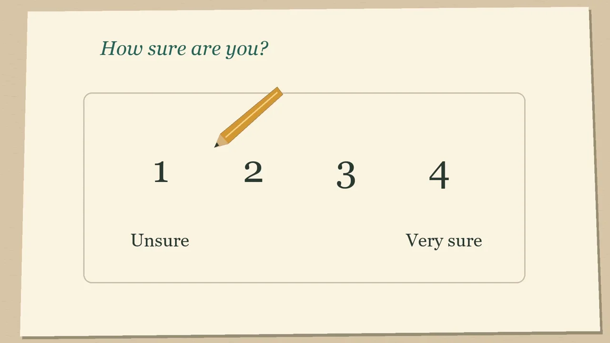

Find the prerequisite
Distinguish a successful algebra step from a fraction error, then use the equal intervals on a number line to explain the missing fourth.
Algebra 1 teacher development · Storyline 360
Two students solve the same equation. Their confidence ratings and written work point to different next steps. What would you say to each student?
About 12 min including the full 4:37 film · No sign-in · Open the responsive workshop

A student can choose the correct inverse operation and still misread the size of a fraction. Another can reason accurately and still feel uncertain. This workshop gives teachers practice using each student’s confidence rating and written reasoning to decide what to probe or reinforce.
Teachers can watch the entire film or open the relevant scene from each activity. They then make the same instructional decisions with sample work and feedback. A Storyline Web Object connects the film, transcript, and practice.
Distinguish a successful algebra step from a fraction error, then use the equal intervals on a number line to explain the missing fourth.
Separate how useful the model felt from what a student can explain tomorrow. Consider how ribbon context and multiple-choice prompts can change what a confidence rating tells you.
Give specific feedback, let partners rehearse their explanations, and compare each student’s prediction with fresh, independent written work.